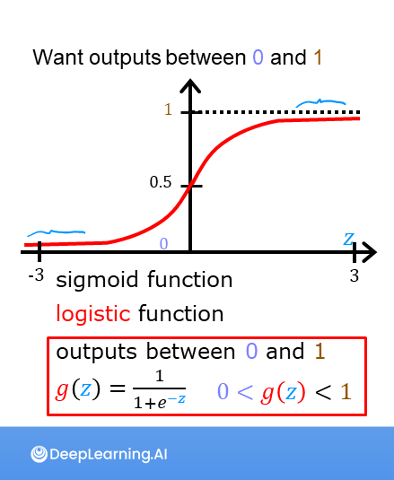

Code
import numpy as np
%matplotlib widget
import matplotlib.pyplot as plt
from plt_one_addpt_onclick import plt_one_addpt_onclick
from lab_utils_common import draw_vthresh
plt.style.use('deeplearning.mplstyle')you’ll get to see how the sigmoid function is implemented in code. You can see a plot that uses the sigmoid to improve the classification task that you saw in the previous optional lab.
This Sigmoid function and logistic regression is part of DeepLearning.AI course: Machine Learning Specialization / Course 1: Supervised Machine Learning: Regression and Classification In this course we will learn the difference between supervised and unsupervised learning and regression and classification tasks. Develop a linear regression model. Understand and implement the purpose of a cost function. Understand and implement gradient descent as a machine learning training method.
This is my learning experience of data science through DeepLearning.AI. These repository contributions are part of my learning journey through my graduate program masters of applied data sciences (MADS) at University Of Michigan, DeepLearning.AI, Coursera & DataCamp. You can find my similar articles & more stories at my medium & LinkedIn profile. I am available at kaggle & github blogs & github repos. Thank you for your motivation, support & valuable feedback.
These include projects, coursework & notebook which I learned through my data science journey. They are created for reproducible & future reference purpose only. All source code, slides or screenshot are intellectual property of respective content authors. If you find these contents beneficial, kindly consider learning subscription from DeepLearning.AI Subscription, Coursera, DataCamp
In this ungraded lab, you will - explore the sigmoid function (also known as the logistic function) - explore logistic regression; which uses the sigmoid function
import numpy as np
%matplotlib widget
import matplotlib.pyplot as plt
from plt_one_addpt_onclick import plt_one_addpt_onclick
from lab_utils_common import draw_vthresh
plt.style.use('deeplearning.mplstyle')As discussed in the lecture videos, for a classification task, we can start by using our linear regression model, \(f_{\mathbf{w},b}(\mathbf{x}^{(i)}) = \mathbf{w} \cdot \mathbf{x}^{(i)} + b\), to predict \(y\) given \(x\). - However, we would like the predictions of our classification model to be between 0 and 1 since our output variable \(y\) is either 0 or 1. - This can be accomplished by using a “sigmoid function” which maps all input values to values between 0 and 1.
Let’s implement the sigmoid function and see this for ourselves.
The formula for a sigmoid function is as follows -
\(g(z) = \frac{1}{1+e^{-z}}\tag{1}\)
In the case of logistic regression, z (the input to the sigmoid function), is the output of a linear regression model. - In the case of a single example, \(z\) is scalar. - in the case of multiple examples, \(z\) may be a vector consisting of \(m\) values, one for each example. - The implementation of the sigmoid function should cover both of these potential input formats. Let’s implement this in Python.
NumPy has a function called exp(), which offers a convenient way to calculate the exponential ( \(e^{z}\)) of all elements in the input array (z).
It also works with a single number as an input, as shown below.
# Input is an array.
input_array = np.array([1,2,3])
exp_array = np.exp(input_array)
print("Input to exp:", input_array)
print("Output of exp:", exp_array)
# Input is a single number
input_val = 1
exp_val = np.exp(input_val)
print("Input to exp:", input_val)
print("Output of exp:", exp_val)Input to exp: [1 2 3]
Output of exp: [ 2.72 7.39 20.09]
Input to exp: 1
Output of exp: 2.718281828459045The sigmoid function is implemented in python as shown in the cell below.
def sigmoid(z):
"""
Compute the sigmoid of z
Args:
z (ndarray): A scalar, numpy array of any size.
Returns:
g (ndarray): sigmoid(z), with the same shape as z
"""
g = 1/(1+np.exp(-z))
return gLet’s see what the output of this function is for various value of z
# Generate an array of evenly spaced values between -10 and 10
z_tmp = np.arange(-10,11)
# Use the function implemented above to get the sigmoid values
y = sigmoid(z_tmp)
# Code for pretty printing the two arrays next to each other
np.set_printoptions(precision=3)
print("Input (z), Output (sigmoid(z))")
print(np.c_[z_tmp, y])Input (z), Output (sigmoid(z))
[[-1.000e+01 4.540e-05]
[-9.000e+00 1.234e-04]
[-8.000e+00 3.354e-04]
[-7.000e+00 9.111e-04]
[-6.000e+00 2.473e-03]
[-5.000e+00 6.693e-03]
[-4.000e+00 1.799e-02]
[-3.000e+00 4.743e-02]
[-2.000e+00 1.192e-01]
[-1.000e+00 2.689e-01]
[ 0.000e+00 5.000e-01]
[ 1.000e+00 7.311e-01]
[ 2.000e+00 8.808e-01]
[ 3.000e+00 9.526e-01]
[ 4.000e+00 9.820e-01]
[ 5.000e+00 9.933e-01]
[ 6.000e+00 9.975e-01]
[ 7.000e+00 9.991e-01]
[ 8.000e+00 9.997e-01]
[ 9.000e+00 9.999e-01]
[ 1.000e+01 1.000e+00]]The values in the left column are z, and the values in the right column are sigmoid(z). As you can see, the input values to the sigmoid range from -10 to 10, and the output values range from 0 to 1.
Now, let’s try to plot this function using the matplotlib library.
# Plot z vs sigmoid(z)
fig,ax = plt.subplots(1,1,figsize=(5,3))
ax.plot(z_tmp, y, c="b")
ax.set_title("Sigmoid function")
ax.set_ylabel('sigmoid(z)')
ax.set_xlabel('z')
draw_vthresh(ax,0)As you can see, the sigmoid function approaches 0 as z goes to large negative values and approaches 1 as z goes to large positive values.
 A logistic regression model applies the sigmoid to the familiar linear regression model as shown below:
A logistic regression model applies the sigmoid to the familiar linear regression model as shown below:
\[ f_{\mathbf{w},b}(\mathbf{x}^{(i)}) = g(\mathbf{w} \cdot \mathbf{x}^{(i)} + b ) \tag{2} \]
where
\(g(z) = \frac{1}{1+e^{-z}}\tag{3}\)
Let’s apply logistic regression to the categorical data example of tumor classification. First, load the examples and initial values for the parameters.
x_train = np.array([0., 1, 2, 3, 4, 5])
y_train = np.array([0, 0, 0, 1, 1, 1])
w_in = np.zeros((1))
b_in = 0Try the following steps: - Click on ‘Run Logistic Regression’ to find the best logistic regression model for the given training data - Note the resulting model fits the data quite well. - Note, the orange line is ‘\(z\)’ or \(\mathbf{w} \cdot \mathbf{x}^{(i)} + b\) above. It does not match the line in a linear regression model. Further improve these results by applying a threshold. - Tick the box on the ‘Toggle 0.5 threshold’ to show the predictions if a threshold is applied. - These predictions look good. The predictions match the data - Now, add further data points in the large tumor size range (near 10), and re-run logistic regression. - unlike the linear regression model, this model continues to make correct predictions
plt.close('all')
addpt = plt_one_addpt_onclick( x_train,y_train, w_in, b_in, logistic=True)